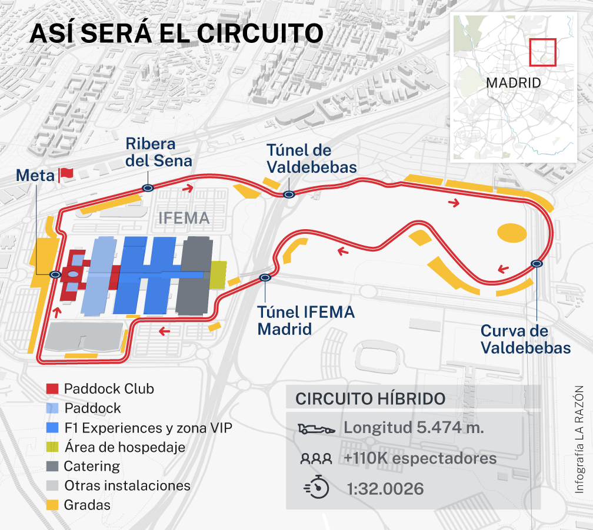

El circuito de Fórmula 1: una obra maestra de construcción

Imagen: Trazado del circuito de Madrid. Fuente: La Razón (uso educativo / LMSGI).
| Concepto | Detalle |
|---|---|
| Circuito | Circuito Urbano de Madrid (IFEMA) |
| Longitud | 5.47 km |
| Número de vueltas | 56 |
| Distancia total | 306.3 km |
| Curvas | 20 |
Características principales del circuito
- Tramo semicallejero que combina zonas de alta velocidad con sectores revirados.
- Curva peraltada espectacular diseñada para favorecer los adelantamientos.
- Paso por el recinto ferial IFEMA y la zona de Valdebebas.